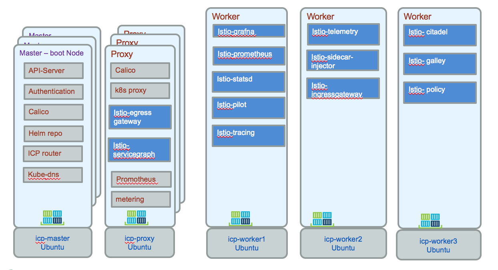

Use ISTIO for service mesh
In this article we are covering a quick summary of istio as deployed inside ICP and how to leverage it for supporting different operational use cases for the Asset predictive maintenance solution.
Summary
The concepts are presented in the istio main page. From the istio architecture the control plane includes Pilot, Mixer and Citadel, and is responsible for managing and configuring proxies to route traffic, and configuring Mixers to enforce policies and collect telemetry. The following is an example of pod assignment within ICP. Egress gateway and servicegraph run on a proxy, while the other components run in the worker nodes.

The command used to get this assignment are:
$ kubectl get nodes $ kubectl describe node <ipaddress>
kubectl get pods -n istio-system.
The component roles:
| Component | Role |
|---|---|
| Envoy | Proxy to mediate all inbound and outbound traffic for all services in the service mesh. It is deployed as a sidecar container inside the same pod as a service. |
| Mixer | Enforces access control and usage policies across the service mesh and collecting telemetry data from the Envoy proxy. |
| Pilot | Supports service discovery, traffic management, resiliency. |
| Citadel | Used for service-to-service and end-user authentication. Enforce security policy based on service identity. |
FAQ
Communication
Circuit Breaker – Need clarification on this. Does it depend on K8’s liveliness check?
Circuit breaking is specific to the Istio sidecar and does not depend on K8s health checks. More information https://istio.io/docs/tasks/traffic-management/circuit-breaking/
Security
Service Registry – Do we have to deploy a service registry (like Eureka) or Istio will use K8s service information?
Documentation says Istio assumes presence of service registry. Istio will automatically use the service information from K8s, there is no need to deploy another.
Security - Do we have to run all services with K8 service account to use Istio?
Workloads in K8s always run under a service account. If you don’t explicitly specify one, the default service account within the namespace will be used.
Security: Auth policy - How does application-generated OAuth token (in HTTP request) work with Istio? Need some examples on “auth.claims” and impact of Istio HTTP filters
The OAuth token is parsed by Istio and its claims (including both standard claims, such as issuer, expiration, etc. and application specific claims) are sent to the Mixer. Mixer policies can refer to the claims in making policy decisions. There is some discussion in https://preliminary.istio.io/docs/concepts/security/ (e.g., can map claims to role in RBAC) but we don't have a concrete example. Note that you can still define policies that match on attributes and since request.auth.claims are strings, they can be processed by the Mixer language.
Security: Auth policy - How do you use Role’s permissions?
A role's permissions are evaluated by a mixer policy. Request attributes, such as user, path and method are evaluated against RBAC rules to allow/deny access. More information in https://preliminary.istio.io/docs/concepts/security/#role-based-access-control-rbac
Security: Auth policy - How to use application defined RBAC within Istio? Does it work only with K8S RBAC?
Istio's RBAC model follows that of Kubernetes, but is implemented independently. RBAC is documented along with example policies in https://istio.io/docs/concepts/security/rbac/ RBAC policies for the BookInfo sample can be found in https://istio.io/docs/tasks/security/role-based-access-control/
The RBAC is very close to the one for k8s, RBAC defined in k8s are to control the k8s API. ISTIO control RBAC controls microservice, so the rules are not on the same objects.
Security: Mutual TLS - Is there a way to use Customer provided Certificate Authority?
Istio supports setting external CA as the root of trust. See https://istio.io/docs/tasks/security/plugin-ca-cert
Security: Mutual TLS - Is there a process to approve/sign CSRs? From doc it seems like they are automatically approved/signed.
Question Clarification [Rakesh]: Regarding CSR, it was specific to mTLS as specified under that bulleted item. Is there a CSR process for “something else” as well? Citadel watches k8s service accounts creation and deletion and generates certificates (and keys) for that service account. Since Citadel is the CA, there is no formal CSR process involved. Currently it is automatic. Could you please provide more information regarding what controls, if any, do you think are needed for CSR approval?
Security: the network policy (how the rules) can be configured in Istio along with calico (good example)
We believe Istio and Calico are complementary. Calico can be used to set policies that are applied preDNAT on the nodes which is useful for setting standard firewall rules on all of the nodes. Istio policies apply to the communication between the services (both internal and external to the mesh). Kubernetes Network Policies (implemented via Calico) control communication between pods. These policies are applied regardless if the pods belong to the Istio mesh or not. Note, K8s network policies are basic source and destination rules whereas istio has more advanced support for evaluating policies between services within the mesh.
API ingress controller configuration (that can work on ICP)
The most straightforward approach for ingress is to use the Istio ingress gateway (not a K8s ingress controller) exposed as a load balancer service. Is there a specific issue of concern regarding ICP deployment?
Telemetry (e.g latency tracing) strategy/configuration, rate limit rules/configuration, canary strategy, mixer
Distributed tracing helps identify and debug issues when they arise. Requires minimal change in code - copying trace headers from incoming to outgoing requests. Traffic metrics are automatically generated and collected for display (preconfigured dashboards available). Rate limiting requires the mixer and you typically want to set the limit to have clients fail fast (e.g., ~80% of actual peak rate). Could you please clarify what guidance is being sought in relation to canary strategy?
Oauth token
istio expects oauth to come, it does not create ones. istio validates token and return 401 is not valid or present token needs to be signed but not encrypted istio extracts attributes at the proxy, and claims and send them to the mixer.
at the mixer you can implement your rules. Use regular expression. 1.0 version there are some examples.
https://istio-releases.github.io/v0.1/docs/concepts/network-and-auth/auth.html
What Entry point
ISTIO gateway is the entry point. We have an ingress gateway as an alternative to k8s ingress controller. expose a unique IP to a load balancer
Support to websocket
Was not supported before 0.8. And it is supported now.
Stomp support
ISTIO will not block Stomp
Each service account has an unique identity, certificate is at the identity
External CA for certificate management. component in istio is called 'citadel' watch for the creation of k8s for a service account, and then bind it to a certificate by creating a secret. The proxy is injected with the certification. when an envoy sends to another envoy they exchange certificate via mutual MTLS. The route of trust is kept inside the cluster. if you need to externalize the CA, you need to add 'citadel' to istio.io/. https://istio.io/docs/tasks/security/plugin-ca-cert/
Service Registry
Component responsible for data plan connectivity is Pilot. It hooks up to the k8s registry. And it will get all the services deployed to k8s.
Communication between microservice, there is no need to get ingress gateway, each pod has its own envoy sidecar. This sidecar automatically connects to pilot, to get the envoy for the target microservice. Service A needs to reference the service name. Be sure to use HTTP so envoy can decode the traffic. With encrypted traffic is not able to uncript.
ingress gateway is for communication at the border of the cluster.
Rate limiting
Cassandra is using TCP, so for istio is TCP end point, it can be limited by the rate in byte at the network level.
Mixer is where you can specify rate limiting policy and are applied globally.